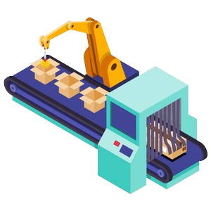
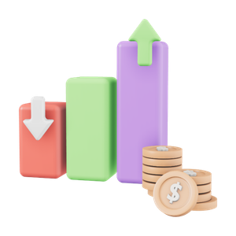
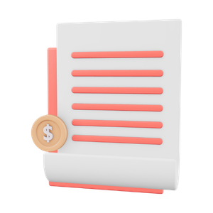

개인회생 채무탕감제도
2026년 법원제도로 빚을 합법적으로 탕감하세요
원금 최대 95% 탕감
이자 100% 전액 탕감
신용회복 & 경제적 재기 기회!
혹시 아래와 같은 상황에 계시나요?
무거운 채무로 일상에 지장이 생기다면 2026년 채무탕감 법원제도를 통해 합법적으로 빚을 줄이세요
이자 100% 전액 탕감
신용회복 & 경제적 재기 기회!
혹시 아래와 같은 상황에 계시나요?
모르는 번호 독촉 전화 더 이상 받기 싫다
우편함 빨간 고지서 뜯어볼 엄두가 안 난다
카드 돌려막기 이제 정말 그만두고 싶다
더 이상 가족·지인에게 손 벌리기 싫다
가족에게 들킬까봐 매일이 조마조마하다
법원에서 보장하는
개인회생 탕감제도
금지명령으로 독촉·협박·압류
신청 즉시 차단!
채무의 덫에서 벗어난 분들의
이야기를 확인해보세요
- 직장인 신청자 김XX님 (서울)
냉동식품 공장에 다니는데, 재작년 허리디스크로 몇 달 일을 못 하면서 빚이 4천3백만원까지 늘었습니다.
통장이 막히거나 회사에 알려질까 봐 걱정했는데, 채무탕감 길라잡이를 통해 제 상황에 맞는 정보를 얻어 회생을 진행했고, 지금은 매달 약 11만원 정도 갚으며 딸 앞에서 웃을 수 있게 됐습니다.
한숨 대신, 이제는 웃는 얼굴을 보여줄 수 있어 다행입니다.
- 일용직 신청자 박XX님 (부산)
막노동과 대리운전을 병행하며 애 둘을 혼자 키우다 빚이 2억을 넘겼습니다.
수임료 걱정에 망설였는데, 채무탕감 길라잡이를 거쳐서 비용과 절차 정보를 솔직하게 확인할 수 있어 마음 놓고 다음 단계를 밟았어요. 지금은 한 달에 약 30만원 갚으며 애들 앞에서 더 이상 한숨 쉬지 않습니다.
사람 사는 것 같은 하루하루가, 이렇게 다시 시작될 수 있더라고요.
- 자영업 신청자 정XX님 (경기 수원)
작은 김밥집이 도로공사와 무리한 이전으로 빚이 1억 7천만원까지 늘었습니다.
재산을 다 뺏길까 겁났는데, 채무탕감 길라잡이를 통해 재산을 지키며 빚을 정리하는 제도라는 정보를 확인하고 용기를 냈어요. 지금은 원리금 92%를 덜고 한 달 34만원씩 갚으며 살던 집을 지키고 있습니다.
자책만 하던 제가, 이제야 조금씩 다시 일어서고 있습니다.
- 사업자 신청자 최XX님 (인천)
제조업 공장이 부도나며 빚이 4억 2천만원까지 늘었고, 아버지 병간호까지 겹쳤습니다.
혼자 하려니 서류가 복잡해 엄두가 안 났는데, 채무탕감 길라잡이를 통해 필요한 정보를 정리해 전문가를 찾을 수 있었어요. 지금은 매달 54만원 정도 갚으며 원금 95%를 덜었습니다.
무너졌던 자리에서, 다시 아버지 곁을 지킬 수 있게 됐습니다.
- 주식·코인 신청자 한XX님 (광주)
주식 투자 실패로 빚이 4억 2천만원까지 불었습니다.
신청했다가 압류가 들어올까 망설였는데, 채무탕감 길라잡이를 통해 오히려 신청하면 추심과 압류가 멈춘다는 정보를 확인하고 결심했습니다. 지금은 매월 164만원씩 갚으며 원금 86%를 덜었습니다.
짓눌렸던 마음이 가벼워지니, 이제야 웃을 힘이 나네요.
- 도박 신청자 윤XX님 (제주)
도박과 코인으로 빚이 8천4백만원까지 늘었고, 가족이 알까 매일 조마조마했습니다.
채무탕감 길라잡이를 통해 가족·직장에 따로 통보되지 않는다는 정보를 알게 되며 막연한 불안이 사라졌어요. 지금은 43만원씩 갚으며 원금 82%를 덜었습니다.
혼자 끙끙 앓던 시간이, 거짓말처럼 가벼워졌습니다.
23,431명 넘는 분들이
채무탕감 길라잡이를 통해
다시 웃는 삶을 찾았습니다.
0분 채무의 늪에서
벗어나신분
벗어나신분
0% 원금 최대
탕감율
탕감율
0% 이자
탕감율
탕감율
나도 정말 해당 되는걸까 ?
개인회생 제도는 법원에서 보장하는
서민을 위한 채무탕감제도입니다.
-
 직장인
직장인 - 일용직
-
 프리랜서
프리랜서 - 자영업
-

사업자 -

주식·코인 - 도박
-

사기 피해
법원은 채무가 생긴 사유만으로 자격을 박탈하지 않습니다.
갚기 어려운 상황인지, 소득이 있는지를 가장 중요하게 봅니다.
도박, 주식·코인, 사기피해, 사업실패 등
다양한 케이스의 많은 분들이 문제없이 탕감을 받았습니다.
나한테 어떤 도움이 되는가?
개인회생 채무탕감제도는 법원이 보장하는 제도이기에 4가지 혜택이 보장됩니다.
-
원금 최대 95%,이자 100% 탕감
주식·코인, 사업, 카드빚, 대출, 대부업까지 대부분의 개인채무가 조정 대상입니다. 형편에 맞춰 원금을 최대 95%까지 덜어내고, 남은 이자는 100% 정리합니다.
-
독촉 전화, 평균 7일 이내 중단
신청과 함께 법원의 금지·중지명령 절차가 시작됩니다. 시도 때도 없이 울리던 독촉과 불법 추심을 평균 7일 안에 법적 절차로 끊어냅니다.
-
신용회복, 금융생활 정상화
성실히 변제를 이어가면 연체·채무 기록이 정리되고 신용점수가 살아납니다. 카드도 대출도 다시 가능한 정상적인 금융생활로 돌아갑니다.
-
가족·배우자·직장 100% 비공개
본인 신청만으로 절차가 진행되며, 가족이나 직장에 개별적으로 통보되지 않습니다. 주변에 알려질 걱정 없이 마음 편히 정리할 수 있습니다.
오늘 무료상담
신청하신분 0명
밤잠 편안한 일상, 더 이상 꿈이 아닙니다.
원금 최대 95%, 이자 100% 탕감
개인회생 채무탕감제도
무료상담 신청하기
예상 탕감액을
확인해드립니다.